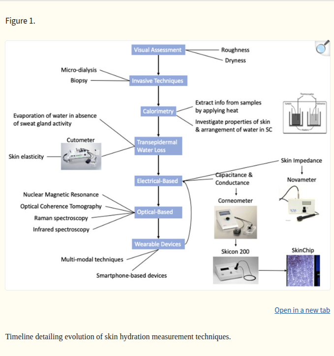

Questões frequentes
Problema
Que problema este projeto procura resolver?
Evitar desidratações em todos os grupos etários e minimizar os impactos ambientais do consumo excessivo de água, tal como a produção e transporte de garrafas de plástico.
Porque razão este problema é relevante hoje em dia?
Um estudo conjunto da iniciativa Liq.In7, que incluiu 3611 crianças, 8109 adolescentes e 16276 adultos em 15 países, concluiu que mais de metade da população não atinge a ingestão média de fluidos recomendada para a sua faixa etária. Apesar de muitos cumprirem as recomendações de ingestão de líquidos, vários estudos mostram que níveis de desidratação insuficientes estão consistentemente associados a:
- Menor desempenho de atletas em provas de resistência
- Menor desempenho cognitivo e declínio cognitivo em idosos
- Mau humor
- Problemas renais
- Morte precoce
Por outro lado, no mercado português, foram produzidas 911 milhões de embalagens de plástico para comercialização de água engarrafada, no mercado nacional, sendo que cada garrafa de água tem uma pegada de carbono de 85 gramas de CO2. Ainda assim, entre 2014 e 2019, o consumo de água engarrafada per capita aumentou cerca de 30%.
Soluções existentes
Que outras soluções semelhantes existem?
O dispositivo mais comum para avaliação da hidratação da pele é o corneómetro, que mede as propriedades elétricas da pele (bioimpedância) que variam consoante os níveis de teor da água. Este instrumento tipicamente apresenta uma configuração de dois elétrodos (bipolar) ligada à pele, que está sujeita a erros de contacto, pois a dupla camada elétrodo-eletrólito introduz uma impedância de contacto que interfere significativamente no valor medido. Por outro lado, outra categoria de métodos unimodais utilizados tradicionalmente baseia-se no sensoriamento ótico. A deteção da absorbância das bandas coincidentes com os picos de absorção da água, especialmente em 970 nm e 1450 nm, permitem efetuar assim uma medição indireta do teor de água. Enquanto que o comprimento de onda de 1450 nm tem absorção mais forte pela água, tem menor poder de penetração na pele e maior sensibilidade a dispersão do que 970 nm. Portanto, quando se combinam os dois comprimentos de onda, é possível estimar o conteúdo de água superficial com confiança. Por outro lado, também se utilizaram equipamentos que medem outras propriedades físicas como a elasticidade da pele e o calor específico para relacionar com o conteúdo da pele.

Fonte: PMC9571519
No entanto, já existem trabalhos académicos que mostram o desenvolvimento e avaliação de sensores multimodais destinados à avaliação altamente precisa da hidratação da pele, que superam as imprecisões e limitações inerentes aos métodos padrão. O sistema proposto utiliza uma abordagem multimodal, que combina sensores elétricos com sensores óticos. A técnica de bioimpedância tetrapolar é implementada para mitigar o impacto da impedância de contacto e eliminar erros associados à dupla camada elétrodo-eletrólito. Adicionalmente, o sensor ótico permite a deteção direta das bandas associadas à água. A combinação de ambas as modalidades visa aumentar a sensibilidade e a validade das medições e fornecer uma ferramenta mais robusta e abrangente para a medição do estado de desidratação da pele.
Fonte: MDPI - Sensors
Outros estudos existentes mostram que o nível de hidratação da pele pode prever hidratações sistémicas leves com exatidão se acrescentarmos variáveis independentes como a utilização de cremes, a massa corporal e a temperatura corporal, porque reflete, em grande parte, o volume do fluido intersticial dérmico e a água retida na matriz extracelular. Esses compartimentos estão em contínuo equilíbrio com o plasma através de trocas de filtração capilar, reabsorção linfática e variações de perfusão microvascular. Alterações no volume plasmático e na osmolalidade sistémica perturbam as forças de Starling e a microcirculação dermal, provocando alterações mensuráveis no conteúdo hídrico dérmico e epidermal. Por essa razão, medidas locais da hidratação cutânea fornecem um sinal fisiologicamente fundamentado, passível de correlação com indicadores de hidratação sistémica (p.ex. variação de massa corporal e osmolalidade urinária), desde que controlados por variáveis como a utilização de cremes, contacto do sensor, o estado emocional do utilizador, a massa corporal e a temperatura.
O que distingue o nosso protótipo das soluções semelhantes existentes
- Relacionamos as medidas da hidratação da pele com a hidratação sistémica
- Informamos a população sobre este problema de saúde pública
- Monitorizamos continuamente o nível de hidratação dos utilizadores e garantir um nível de hidratação saudável
- Utilizamos um sensor multimodal, com uma componente elétrica e ótica, para aumentar a precisão da medição
- Provavelmente introduziremos uma componente para medir a elasticidade da pele e aumentar a precisão da medição
- Possivelmente utilizaremos um sensor de bioimpedância tetrapolar
- Consideramos introduzir um LED com 1450 nm para complementar a medição do LED de 970 nm
- Ainda poderemos melhorar se acrescentarmos uma componente termodinâmica ao nosso sensor
Protótipo
Como funciona o protótipo escolhido
O nosso protótipo inicial será um Arduino NANO BLE ligado a um sensor de bioimpedância bipolar Grove GSR, a um LED IR de 970 nm e um fotodíodo que absorve apenas esse comprimento de onda. O utilizador coloca os elétrodos nos dedos 3 e 4 e a pulseira no pulso e o aparelho está pronto a realizar medições constantemente, efetuando uma média dos valores para eliminar o ruído.
Quais são as principais funcionalidades
O protótipo está conectado a uma aplicação que comunica com o utilizador e permite melhorar continuamente o modelo.
Que melhorias poderiam ser introduzidas neste protótipo
Reduzir as dimensões da pulseira e torná-la mais discreta e menos vulnerável a danos materiais.